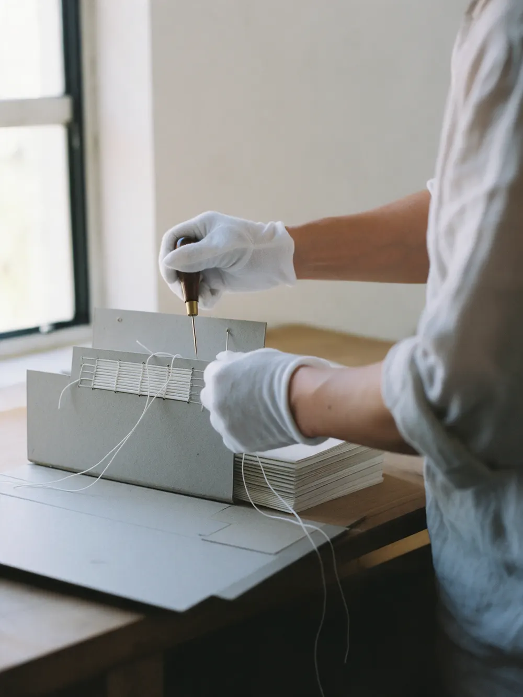
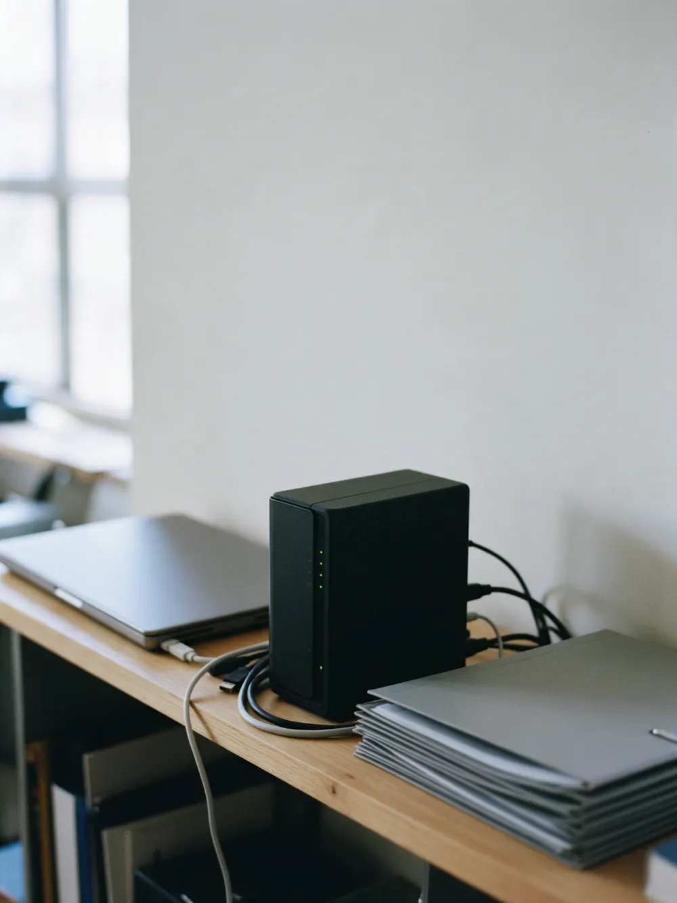
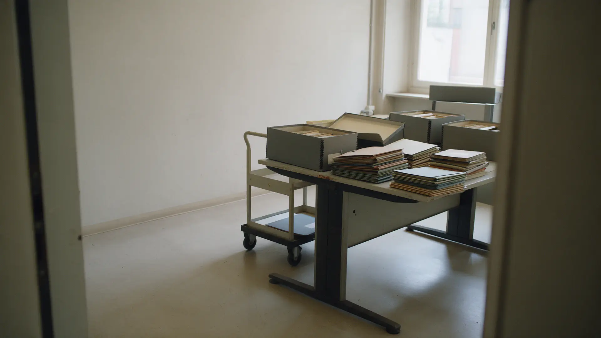

Пункты по трём этапам. Галочки в шапке считают, пока вы листаете. По этому же акту принимаете работу, когда мы закончим.
потом
«Разберём потом» – это не архив
Так обычно откладывают: дела копятся в шкафах, документ ищут по памяти, а разбирают всё накануне проверки.
«Дела лежат в шкафах»Что где – знает один человек. Уйдёт в отпуск, и архив закрыт
«Найдём по памяти»Без описи документ ищут часами, а иногда не находят совсем
«К проверке разберём»Приводить архив в порядок за неделю до проверки – худший момент
Акт приёмки архивной обработки
Три этапа, 18 пунктов. В колонках отмечено, что входит в обработку каждого вида дел. По этому списку принимаете работу: пункт не принят – доделываем до подписания акта.
Ппостоянного хранения
Лпо личному составу
Ввременного хранения
01
Систематизация и опись
7 пунктов

Разбор, подшивка и опись – основа любой работы с архивом. Для дел постоянного хранения и по личному составу – полный комплект.
ПунктПЛВ
1Разбор документов, формирование дел по номенклатуре
2Проверка полноты и состояния листов
3Подшивка или переплёт дела
4Нумерация листов в деле
5Внутренняя опись документов делаЕсли в деле много разнородных документов
6Заверительная надпись, обложка дела
7Опись дел
02
Сканирование
5 пунктов
Бумажные дела – в электронный вид. Дела возвращаются в прежний порядок, ничего не теряется.
ПунктПЛВ
8Расшивка и подготовка листов, снятие скрепок
9Сканирование листов
10Проверка читаемости и полноты скана
11Имена файлов по описи
12Возврат дел в исходный вид
03
Электронный архив
6 пунктов

Нужное дело находится за минуты, а не за дни. Доступ – только тем, кому он нужен.
ПунктПЛВ
13Структура папок по номенклатуре дел
14Электронная опись и реестр дел
15Поиск дела по номеру и реквизитам
16Права доступа по сотрудникам
17Ограничение доступа к персональным даннымДля кадровых документов
18Отметка сроков хранения, контроль уничтоженияЭкспертиза ценности перед уничтожением

Как проходит
1 / 4 · Заявка
Описываете объём и задачу
Сколько дел или коробов, какие документы, к какому сроку. Отвечаем оценкой и порядком работы.
2 / 4 · Договор
Фиксируем состав работ и сроки
В договоре – пункты акта, которые входят в ваш заказ, и порядок передачи документов.
3 / 4 · Работа
Разбираем, описываем, сканируем
Систематизация, опись, подшивка, сканирование и электронный архив – по выбранным этапам.
4 / 4 · Приёмка
Принимаете работу по акту
Передаём описи и акт. Пункт не принят – доделываем до подписания.
1 Заявка2 Договор3 Работа4 Приёмка
Стоимость – по объёму, до начала работ
Опишите объём дел и виды документов – получите оценку, а не «зависит от задачи». Буква у каждого вида – это колонка в акте выше.
Как считаем
Объём дел и этапы – оценка до договора.
Экспертиза ценности и уничтожение документов – по запросу. Цены по видам дел уточняются у компании.